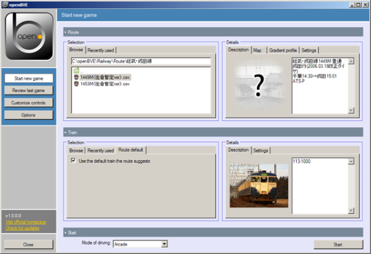
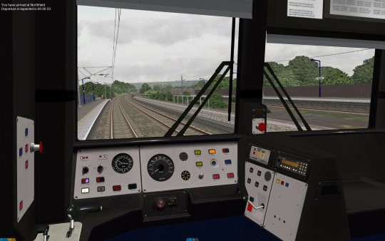
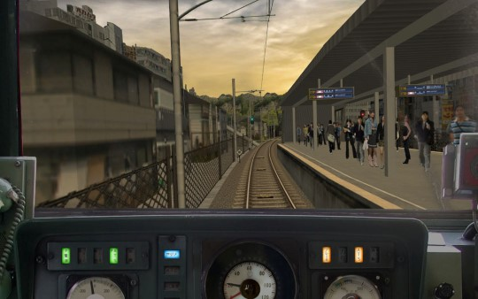

About
About openBVE
openBVE is a cross-platform, free-as-in-freedom train simulator placed in the public domain. This means that you can make any modifications to it you like and share your modifications with others.
Screenshots
  Simulation
openBVE includes detailed per-car simulation of the brake systems, friction, air resistance, toppling and more. In 3D cabs, the driving experience is augmented with forces that shake your simulated body upon acceleration and braking, as well as in curves. Besides that, openBVE features a 3D positional sound system best enjoyed with surround speakers, train exteriors and timetables for the current run. Finally, via the main menu, routes and trains be easily installed and selected to start a new session, the controls can be configured to keyboard or joystick devices, and a variety of options can be set up.
Realism
Compared to other simulators of the genre, openBVE has its main focus on realism. You should be willing to study operational manuals for the routes and trains you want to drive, and will in many cases not get along by just memorizing a few keystrokes. If you can identify with this focus, openBVE might be the right simulator for you.
Credits
The following is the list of credits from the old openBVE site, which includes everyone who has made significant contributions to this project.
Programming
michelle Lead programming
odakyufan web Additional programming, feedback and testing
Anthony Bowden (Anthony_B) web Additional programming, feedback and testing
Homepage
michelle Homepage content
Anthony Bowden (Anthony_B) web Current hosting solution
Steve Green (wumpty) Former hosting solution
Packagers
Paul Sladen (sladen) email Ubuntu package maintainer, portability improvements
Marc Riera Irigoyen (Markitus95) web email Catalan
Translators
Jan Henning (Jan) German
phontanka web web email Hungarian
Dirk-Jan Breunissen (DJB) Dutch
Alvin Wong (alvinwong) Chinese (Simplified)
and others...
Copyright and licensing
The original developer of openBVE, michelle, has placed all of the openBVE project, including the original documentation and the main program, to the public domain.
Following this, the web pages, downloads and documentation hosted on this site are placed in the public domain too.
About this site
This unoffical site was set up to provide a reliable place to download openBVE, as well as to provide easy access to development tools and documentation.
This site is maintained by joeyfoo. The code for the website can be found and contributed to on Github. Please send me any comments, either via email to openbve at joeyfoo.com, or by submitting an issue on Github.
Special thanks to odakyufan for providing a comprehensive set of source code, compiled executable files, and documentation.